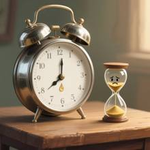
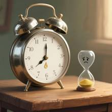

Logical Reasoning — Next to a huge metal alarm clock, a small glass hourglass looked sad b
Next to a huge metal alarm clock, a small glass hourglass looked sad because its sand had run out and seemed to lament the passage of time.

Judge — Direct
- FAILLogical Reasoning — The sand in the hourglass has not run out. There is still a noticeable amount of sand in the top bulb, and a stream of sand is actively flowing to the bottom bulb. Therefore, the premise for the sadness, which is that the sand had run out, is not met in the image.
- FAILAttribute - Expression — The hourglass is an inanimate object with no facial features. The image does not visually anthropomorphize the hourglass to give it a sad expression.
- PASSAttribute - Material — The alarm clock has a silver, reflective surface consistent with metal. The hourglass is transparent and has highlights, consistent with glass.
- PASSAttribute - Size — The image places a large alarm clock next to a visibly smaller hourglass. The relative scale between the two objects matches the prompt's description of a "huge" clock and a "small" hourglass.
Judge — Continuum
- PASSLogical Reasoning — The image shows an hourglass with a sad face drawn on its upper bulb. All the sand is collected in the bottom bulb, visually representing that the sand has 'run out'. This connects the sad expression to the state of the hourglass.
- PASSAttribute - Expression — A sad facial expression, with downturned eyebrows and a frowning mouth, is clearly drawn on the upper bulb of the hourglass.
- PASSAttribute - Material — The alarm clock has a reflective, metallic surface, appearing to be made of metal such as brass and steel. The hourglass is transparent and clear, consistent with being made of glass.
- PASSAttribute - Size — The image shows a large, twin-bell alarm clock standing next to a much smaller hourglass. The relative sizes clearly depict the clock as 'huge' and the hourglass as 'small'.
What the agent did
Thinking
Let me carefully understand this prompt. "Next to a huge metal alarm clock, a small glass hourglass looked sad because its sand had run out and appeared to lament the passage of time." So the scene is: - A huge metal alarm clock (a classic twin-bell alarm clock with a metal body) - A small glass hourglass next to it - The hourglass is sad — personification — because the sand has run out (i.e., all the sand has settled at the bottom, or the top bulb is empty) - It looks like it's lamenting the passage of time — so the hourglass should have a sad face/expression, and perhaps be shown in a posture of lamentation. Key elements: 1. Huge metal alarm clock — classic twin-bell design, metal, large. 2. Small glass hourglass — next to it, clearly smaller in scale. 3. Sand has run out — all the sand is at the bottom (or the top is empty). 4. Sad, lamenting expression — personified, probably with a sad face drawn on the hourglass, slumping posture, maybe tears. This is a whimsical/anthropomorphized scene. A good composition: a large vintage metal alarm clock and a small glass hourglass with a visibly sad face on it, all the sand at the bottom, maybe with a tear. Emotional atmosphere — the hourglass appears to be mourning time. Let me generate with qwen-image as per the policy. Prompt draft: "A whimsical still life on a wooden surface: a huge vintage metal twin-bell alarm clock standing tall, and next to it a small glass hourglass with a sad, personified face — drooping eyebrows, down-turned mouth, a single tear rolling down the glass — lamenting the passage of time. The hourglass is empty at the top with all the sand collected in the bottom bulb, conveying that time has run out. Soft warm lighting, melancholic mood, detailed illustration." Let me be careful about visual details: "sand has run out" — all the sand in the bottom bulb, the top is empty. Sad face — eyebrows slanting up in the center, a frowning mouth, tears. Lamenting the passage of time — posture: slightly tilted forward, hand on cheek? Hands on a glass hourglass might be overkill; a face plus tears plus a slightly drooping posture is enough. I'll use 1024x1024 as the default (the harness controls the size, so I'll keep the default). Alright, let's generate.
Step 1 — `generate_image`
{
"model": "qwen-image",
"prompt": "Whimsical melancholic still life: a huge vintage metal twin-bell alarm clock with a polished chrome body and round white dial, standing tall on a wooden tabletop, and right next to it a small glass hourglass personified with a visibly sad face \u2014 drooping eyebrows, downturned frowning mouth, and a single teardrop sliding down the glass \u2014 lamenting the passage of time. The hourglass's top bulb is completely empty, all the golden sand has run out and is collected in the bottom bulb, showing its time is finished. The little hourglass leans slightly forward as if in sorrow. Soft warm side lighting, muted nostalgic colors, painterly storybook illustration style, shallow depth of field."
}Result img_0

Thinking
Let me check the results: - Huge metal alarm clock: yes, a large vintage brass/metal twin-bell alarm clock. Good. - Small glass hourglass next to it: yes, clearly smaller, placed on the right side. - Sad face: yes — slanted eyebrows and a frowning mouth. Good. - Sand ran out: hmm. Looking at the hourglass, sand is piling up in the upper bulb, and a stream is still flowing to the lower bulb where a pile is forming. That means the sand hasn't "run out" yet — it's still in the middle of flowing. The prompt says the sand has run out, so the upper bulb should be empty and all the sand should be in the lower one. Wait, looking again: the upper bulb has sand forming a mound, with a thin stream descending, and the lower bulb has a pile. So it's mid-flow. To convey "time's run out," the upper bulb should be empty and all the sand in the lower one. Hmm, but actually, the face is in the upper bulb area, sitting on top of the sand. If the upper bulb were completely empty, the sad face would be floating in an empty upper bulb, and all the sand would be in the lower one. That's actually a more poignant depiction: a face floating in empty glass, and a big pile of sand below. Let me edit: make the upper bulb empty, and all the sand collected in the lower bulb. Also, the hands on the clock face: the hour hand is… there's a big hand pointing up (12 o'clock) and a smaller one pointing to 7/8 o'clock. No problem. Let me make a targeted edit: "Make the upper bulb of the hourglass completely empty — no sand or stream in the upper half, with all the golden sand collected in the lower bulb as one big pile." Use edit_image on img_0.
Model
The scene is mostly right — a large metal alarm clock, a small hourglass next to it with a sad face. But the sand hasn't finished yet: the top bulb still has sand remaining, and a stream is still flowing. Since the prompt says the sand has *run out*, let's fix that.
Step 2 — `edit_image`
{
"image": "img_0",
"model": "qwen-image",
"prompt": "Make the top bulb of the small hourglass completely empty glass with no sand and no falling stream; all of the golden sand has finished running and now sits as one big pile in the bottom bulb only. Keep the sad face, the alarm clock, and everything else exactly the same."
}Result img_1

Thinking
With this, the upper bulb is completely empty, and all the sand is piled in the lower bulb. The hourglass's face is sad, with slanted eyebrows and a frown. The alarm clock is a big metal twin-bell one. Let me check the details. I'll zoom in on the hourglass to check the face and make sure there's no remaining stream. I'll also check the alarm clock's dial. Let me use inspect_region on the hourglass area. The hourglass is roughly at x: 660-880, y: 410-800 within the 1024x1024 image. Let me verify with a crop.
Model
The upper bulb is now empty, and all the sand is gathered in the lower bulb. Let me take a closer look at the hourglass to check the details.
Step 3 — `inspect_region`
{
"image": "img_1",
"roi": [
640,
400,
900,
820
]
}Result img_2
Thinking
What the cropped image shows: - Top bulb: completely empty, glass is clean - Sad face: slanted eyebrows, two dot-like eyes, downturned mouth — clearly looking sad, like it's lamenting - Bottom bulb: all the golden sand has gathered in one pile — sand has run out - No stream of falling sand This matches the prompt: "Next to a giant metal alarm clock, a small glass hourglass with its sand completely run out looked sad, and appeared to be lamenting the passage of time." All elements are present: 1. ✅ Giant metal alarm clock (vintage twin-bell type, metal/brass) 2. ✅ Small glass hourglass next to it 3. ✅ Sand completely run out (top is empty, all sand in the bottom) 4. ✅ Sad face — slanted eyebrows, frown, lamenting The image looks good. Let me mark img_1 as the best. The quality is sufficient — I'm satisfied with this result. Good enough is a stopping condition.
Step 4 — `mark_best`
{
"image": "img_1",
"reason": "All prompt elements present and verified: huge metal twin-bell alarm clock, small glass hourglass beside it with a sad frowning face, top bulb completely empty with all sand collected in the bottom bulb (sand run out), conveying lament for the passage of time."
}Thinking
Done. The image matches the prompt. I'll summarize for the user.
Model
Done! The final image (marked as best) delivers the full scene: - **Huge metal alarm clock** — a large vintage twin-bell chrome/brass clock dominates the left side of the frame. - **Small glass hourglass** — set right next to it, clearly dwarfed by the clock for scale. - **Sand has run out** — the top bulb is completely empty; every grain has settled into one pile in the bottom bulb, with no falling stream left. - **Sad, lamenting mood** — the hourglass wears a sorrowful face (drooping eyebrows, downturned mouth), and the warm, quiet lighting gives the whole scene a melancholic, time-lamenting atmosphere.